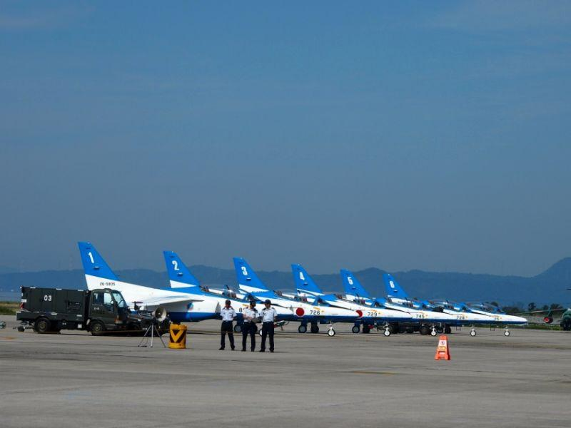

敏腕パイロットたちの聖地となった松山 < 第三四三空海軍航空隊 / 愛媛県松山市 >
時は昭和20年(1945)。
各地で敗退を繰り返し 劣勢に立たされていた日本において、米軍機動部隊相手に互角の戦いを行い、我が国の空を守った部隊が四国松山にありました。
第三四三海軍航空隊こと剣部隊
海軍軍令部航空隊員である源田實(げんだみのる)大佐の着想によって編成された 第三四三海軍航空隊こと "剣部隊"
源田大佐は「日本の劣勢は制空権を獲得できていないこと」 が原因と考え、優秀なパイロットと最新鋭の戦闘機を集中配備した部隊を実現させた。
編成された三部隊は 各地で練成を行った後、昭和20年1月末、地理的要因から適当と判断された松山に集結。松山基地を拠点に日本上空の防衛にあたることになった。
初陣が大戦最後の大戦果に。松山上空戦
初陣はそれから2ヶ月にも満たない3月19日。
呉軍港を目標に飛来した米軍グラマン機など約350機の戦闘機相手に、松山基地から出撃した三四三空・紫電改54機が交戦、松山上空で大規模な航空戦が繰り広げられた。
数量が圧倒的に勝る相手に敢然と立ち向かい、58機の撃墜を記録。自軍の損害は16機と地上で破壊された5機を合わせた21機という、結果的に大戦最後となる大戦果を挙げた。
ただ、
実際には日米双方 戦果の誤認があったようで、戦後に明かされた米軍側の資料と照らし合わせると 日本側がやや優勢なくらいだったとか。
しかしながら この時既に米軍機と互角に交戦できる戦闘部隊は パイロット・機材共に少なく、これまでにない猛反撃を受けた米軍パイロットたちに与えた 心理面での影響は大きかった様子。
事実、この戦闘を境に 松山への侵攻を一時避けるようになった話があるくらいです。
九州上空の防衛。エースパイロットの未帰還
その後 4月になり、三四三空は鹿児島県の鹿屋基地へ移動。沖縄へ向かう特攻機の護衛や、制空権の確保の任務にあたった。
当初の拠点は鹿屋基地だったが、三四三空の作戦行動には不適な土地であり、同じ鹿児島県の国分基地、長崎県の大村基地へ移動。
そこでは特攻を出すように告げられたが、この申し出を断っている。それができたのは中四国・九州の空を守っている実績があったがゆえだろう。

7月24日、再び呉軍港を狙って飛来した米軍機200機と 豊後水道上空で交戦。
大村基地から飛び立った三四三空は僅か21機。圧倒的不利な状況下で 米軍戦闘機16機の撃墜を記録したが、この戦闘で「空の宮本武蔵」こと武藤金義少尉を始め エースパイロットら6名が未帰還になった。
この時交戦した機体の一機は 海に不時着しそのまま水没したが、後年発見され 引き揚げられている。
そして8月15日、戦争が終わり 三四三空を含む日本軍は解隊となった。
日米大きな戦力差があり 圧倒的に不利な状況下にあって互角に渡り合い、日本上空防衛の任務をまっとうした三四三空の勇猛果敢さは、今なお語り継がれている。
三四三空の精神はブルーインパルスへ...

photo : コトバスツアー・SY
戦後、元・三四三空司令から航空自衛隊幕僚長に就任した源田は、戦前に 「源田サーカス」の名で親しまれていた、航空機によるアクロバット飛行隊の復活に奔走する。
photo : コトバスツアー・SY
「ブルーインパルス」 の誕生である。
戦争激化により行われなくなっていったアクロバット飛行だったが、それがもたらす国民への好影響・隊員の指揮高揚効果は、戦前 実際にアクロバット飛行を披露していた源田が一番知るところだった。
しかしながらそれはあくまで非公式行事であり、もし今 不慮の事故が発生した際は 名誉ある措置が取れない。祖国防衛に散った三四三空の英霊たちに顔向けができない...
源田の多方面への働きかけが実り、正式にアクロバット飛行チーム・ブルーインパルスが発足した。
ブルーインパルスは、昭和39年(1964)に開催された東京オリンピックの開会式で、東京の空にカラースモークで五色の輪を描いた。
これまでに前例のなかった斬新なアトラクションに、日本だけでなく 全世界がブルーインパルスに沸き、その名は誰もが知るところとなった。
また、航空機の平和利用は 憲法に戦争放棄を定めた日本国の象徴にもなった。
源田はその後 参議院議員として政界に進出し、4期24年務めたところで引退。
一線から身を引き 自宅がある神奈川県の厚木市で暮らしていたが、病気を患ってからは思い出の地・松山へ転居して療養にあたった。
その甲斐虚しく、44回目の終戦記念日にあたる 平成元年(1989)8月15日、自身の誕生日前日に89歳でこの世を去った。
三四三空隊員にとって 訓練などで過ごした松山は最もゆかりの場所となり、戦後に開かれた三四三空の懇親会は毎年松山で行われていたそうです。